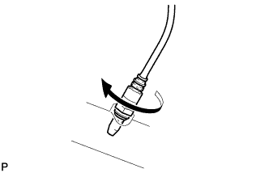
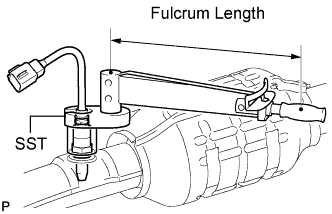
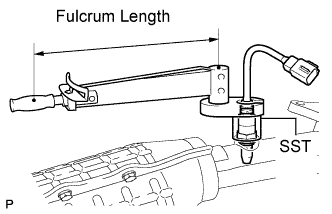
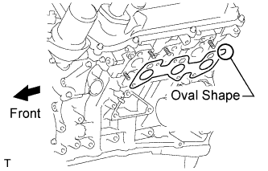
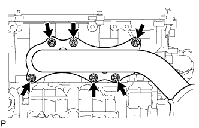
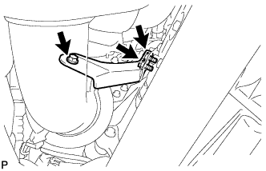
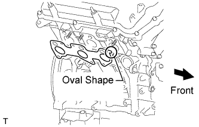
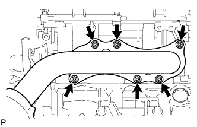
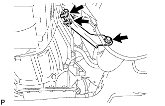

AIR FUEL RATIO SENSOR > INSTALLATION |
| 1. INSTALL AIR FUEL RATIO SENSOR (for Bank 2 Sensor 1) |
 |
Temporarily install the sensor to the exhaust manifold by hand.
 |
Using SST, tighten the sensor.
| 2. INSTALL AIR FUEL RATIO SENSOR (for Bank 1 Sensor 1) |
Temporarily install the sensor to the exhaust manifold by hand.
 |
Using SST, tighten the sensor.
| 3. INSTALL EXHAUST MANIFOLD SUB-ASSEMBLY LH |
 |
Set a new gasket to the cylinder head LH with the oval shape facing rearward.
 |
Install the exhaust manifold with 6 new nuts.
Connect the air fuel ratio sensor connector.
| 4. INSTALL NO. 2 MANIFOLD STAY |
 |
Install the No. 2 manifold stay with the 3 bolts.
| 5. INSTALL EXHAUST MANIFOLD SUB-ASSEMBLY RH |
 |
Set a new gasket to the cylinder head RH with the oval shape facing forward.
 |
Install the exhaust manifold with 6 new nuts.
Connect the air fuel ratio sensor connector.
| 6. INSTALL MANIFOLD STAY |
 |
Install the No. 1 manifold stay with the 3 bolts.
| 7. INSTALL FRONT EXHAUST PIPE ASSEMBLY |
Install 2 new gaskets to the front exhaust pipe.
Install the front exhaust pipe to the exhaust manifold RH with 2 new nuts.
Install the 2 compression springs and 2 bolts to the center exhaust pipe.
Connect the heated oxygen sensor connector.
| 8. INSTALL FRONT NO. 2 EXHAUST PIPE ASSEMBLY |
Install 2 new gaskets to the front No. 2 exhaust pipe.
Install the front No. 2 exhaust pipe to the exhaust manifold LH with 2 new nuts.
Install the 2 bolts to the center exhaust pipe.
Connect the heated oxygen sensor connector.
| 9. INSPECT FOR EXHAUST GAS LEAK |
| 10. INSTALL FRONT FENDER APRON SEAL LH |
 |
Install the fender apron seal with the 4 clips.
| 11. INSTALL FRONT FENDER APRON SEAL REAR LH |
 |
Install the fender apron seal with the 4 clips.
| 12. INSTALL FRONT FENDER APRON SEAL FRONT RH |
 |
Install the fender apron seal with the 3 clips.
| 13. INSTALL FRONT FENDER APRON SEAL REAR RH |
 |
Install the fender apron seal with the 4 clips.